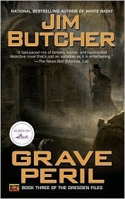

"Grave Peril"
- Read on 2021-05-07
- Rating: ️️️️️
- Format: 🎧 (11 hours 55 minutes)
Vampires and evil spirits. If the prior book felt fast, this one felt even faster. It's still interesting and entertaining - and the multi-book developments are able to come more into play here. Regardless, with the pace of events in the book, and some of them coming out of nowhere, it felt a little tricky to keep up. Although I'm still interested in the next book, I hope the pace adjusts.
- Prior: Fool Moon
- Next: Peter and the Starcatchers